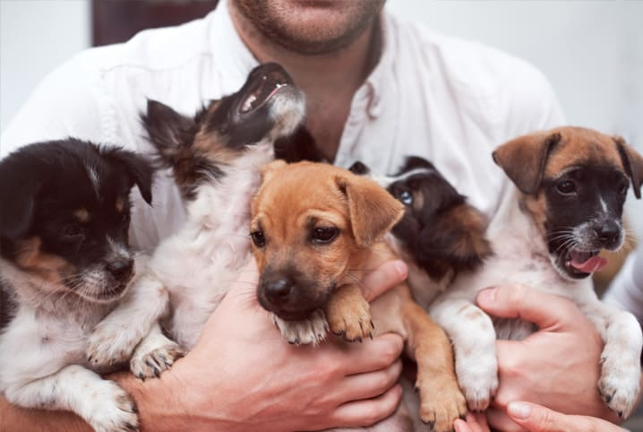

Quem Somos
Somos uma organização sem fins lucrativos dedicada à promoção da adoção responsável e ao estímulo do cuidado com nossos companheiros de quatro patas.
Lembre-se: a solidariedade é o vínculo que une a humanidade. É o ato de reconhecer que somos todos parte de uma mesma família.
Contato
Email: melhoramigo@gmail.com
Telefone: (32) 9982-9568